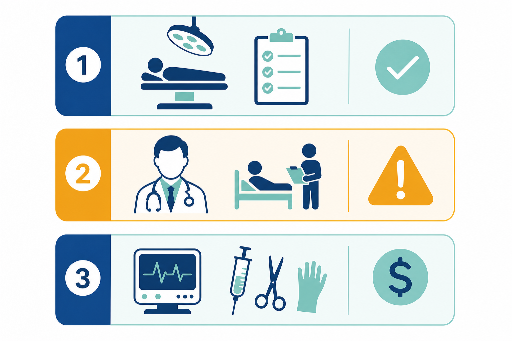

為什麼「套餐價」往往不是最終帳單？
香港私家醫院的定價結構，大致可分為醫院收費與醫生費用兩大板塊。您看到的「全包套餐」通常只涵蓋其中一部分——例如病房、基本護理、標準手術室時數，以及若干固定項目。其餘由主診醫生、麻醉科、相關專科醫生獨立定價的項目，以及按實際使用計費的儀器與耗材，往往不會完整寫進套餐宣傳頁。
這並非必然存在「陷阱」，而是私院商業模式使然：醫院提供場地與配套，醫生以獨立執業者身份收費，兩者分開結算。問題在於，若入院前沒有逐項確認，患者容易把「套餐起價」誤讀為「封頂價」。
醫生巡房費：最容易被低估的日常開支
「巡房」（Ward Round）指主診醫生或其團隊在住院期間到病房探視、檢查病情並調整治療方案。在香港私院，這通常按次或按日獨立收費，且不一定包含在手術套餐內。
常見計費方式
- 按次計費：每次巡房 HK$1,500–4,000 不等，視醫生資歷與醫院而異
- 按日計費：部分醫生以「每日巡房費」打包，住院愈久，累計愈高
- 團隊成員另計：除主診外，副手、專科顧問的探視有時各自收費
- 非辦公時間加成：夜間、週末或公眾假期的緊急巡房，可能適用更高費率

實際案例估算
以一般腹腔鏡日間手術後留院觀察 2 晚為例：若主診醫生每日巡房 HK$2,500，2 日即 HK$5,000；若再加上麻醉科醫生術後探視 HK$1,500，單是「人為服務」已可能達 HK$6,500 以上——而這些往往不在您最初看到的「手術全包 HK$XX,XXX」之內。
| 費用項目 | 常見計費方式 | 是否在套餐內 |
|---|---|---|
| 主診醫生巡房費 | 按次 / 按日，HK$1,500–4,000 | 多數不包含 |
| 麻醉科醫生費 | 按手術時長 + 術後探視 | 部分套餐含基本麻醉，超時另計 |
| 專科顧問會診 | 按次，HK$2,000–6,000+ | 通常不包含 |
| 急症夜間巡房 | 在標準費率上加成 30%–100% | 通常不包含 |
儀器使用費：按次、按分鐘、按耗材的三重邏輯
手術室內的高值耗材與特殊儀器，是另一大「隱形」支出來源。私院對這類項目的計費邏輯，可歸納為三種：
1. 按使用次數計費
例如超聲刀、吻合器、特殊縫合釘等一次性耗材，每使用一個單元即計一次。以腹腔鏡吻合器為例，單個耗材成本可由 HK$3,000 至 HK$15,000 不等，視品牌與手術類型而定。若術中需更換或追加，費用線性上升。
2. 按使用時長計費
部分儀器（如 C-arm 透視、特殊內窺鏡系統）以每 15 或 30 分鐘為計費單位。手術時間若因併發症延長，儀器租金同步增加。標準套餐通常包含固定手術室時數（如 2 小時），超時部分按每小時 HK$3,000–8,000 另計。
3. 按實際消耗計費
術後結算時，藥房、化驗、影像覆查、物理治療等按量計費的項目會逐項出現在帳單上。住院愈久，這部分累積愈明顯。
如何看懂入院報價單？四步核對法
收到醫院書面報價後，建議按以下順序逐項核對，避免遺漏：
- 區分「醫院方」與「醫生方」：報價單應分別列明醫院收費小計與各項醫生費用小計，而非混為一談。
- 查找「Excluded Items / 不包含項目」附表：正規報價會附一頁 exclusions list，列出套餐明確不含的項目。
- 確認住院天數假設：套餐常按「預計 1–2 晚」定價，若實際留院延長，病房費與巡房費同步增加。
- 詢問「最壞情況」上限：可要求醫院提供若出現常見併發症時的費用區間估算（非精確報價，但有助預算緩衝）。
保險能賠多少？別等出院才對 VHIS 條款
即使持有 VHIS 自願醫保，醫生巡房費、超出套餐的儀器耗材能否理賠，取決於您的計劃類型（標準 / 靈活 / 高端）及具體條款：
- 標準計劃：對非指定手術、非標準病房、部分醫生費用設有年度上限，超額部分全數自付
- 靈活 / 高端計劃：通常有更高的病房及雜費限額，但「雜費」定義各社不同，需逐條核對
- 自付額（Deductible / Co-pay）：部分計劃對每次住院設固定自付額，無論實際帳單高低
建議在入院前 48 小時致電保險公司「預授權」（Pre-authorization），確認預計項目是否在保障範圍內，並索取書面回覆編號留檔。
入院前估算清單（可直接逐項勾選）
- 已取得醫院書面報價，並確認「包含 / 不包含」附表
- 已向主診醫生確認預計巡房次數及單次/單日費用
- 已了解術中最可能使用的關鍵耗材及價格區間
- 已確認預計住院天數，以及超時每日的病房 + 巡房增量
- 已向保險公司完成預授權，並保存回覆編號
- 已在 MedicalPrice 對應專科頁面橫向對比至少 2 間醫院的套餐參考價
結語：收費比較，從「問對問題」開始
香港私院的隱藏收費，多半不是刻意隱瞞，而是定價結構複雜、多方分賬所致。掌握巡房費與儀器耗材的計費邏輯，並在入院前完成書面確認，您就能把預算誤差控制在可接受範圍內。
MedicalPrice 各專科頁面已收錄多間私院的套餐參考價，可作為橫向比較的起點。但請記住：平台展示的是套餐基價，實際總開支仍需加上醫生費與按量雜費。建議將本文清單與平台資料結合使用，做出更完整的財務規劃。